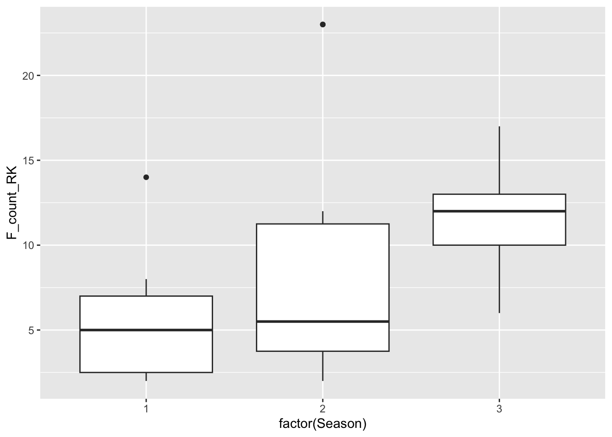
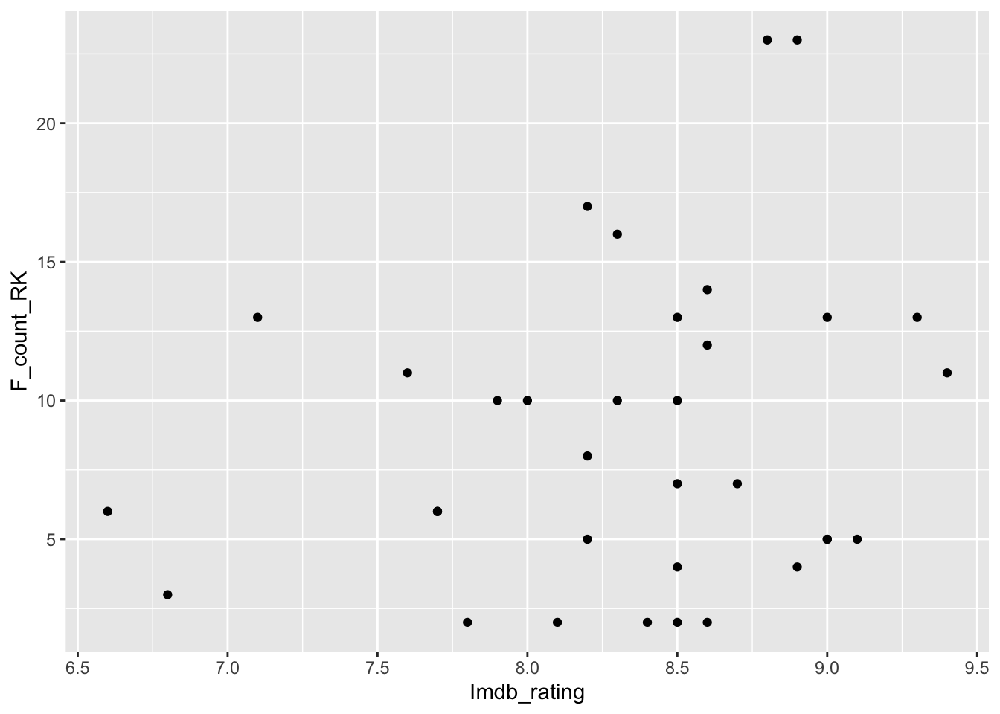
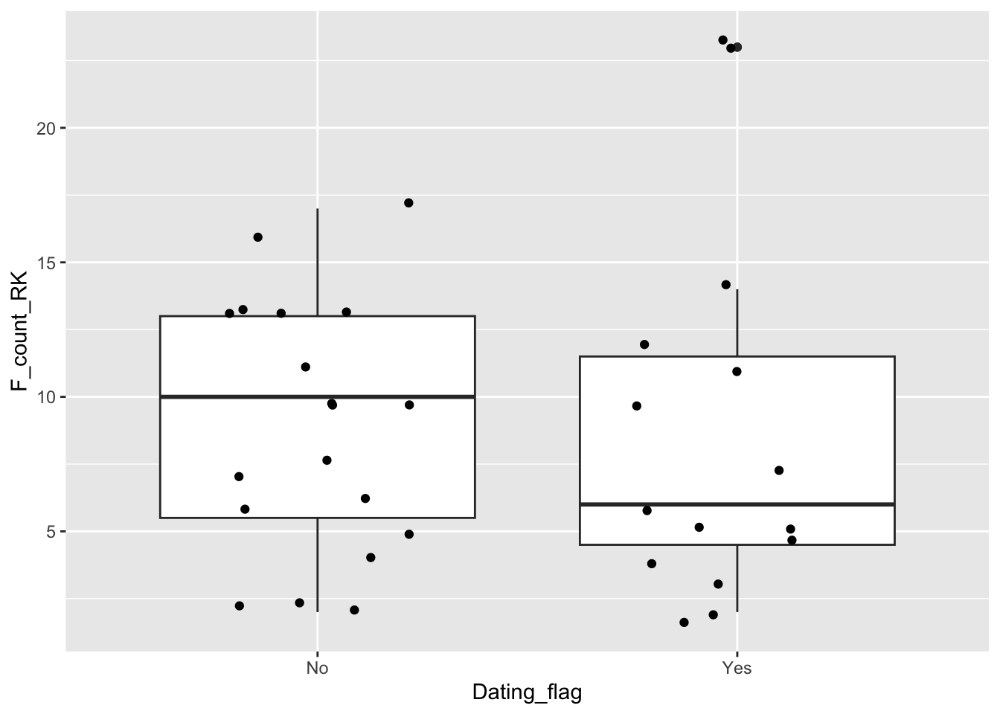
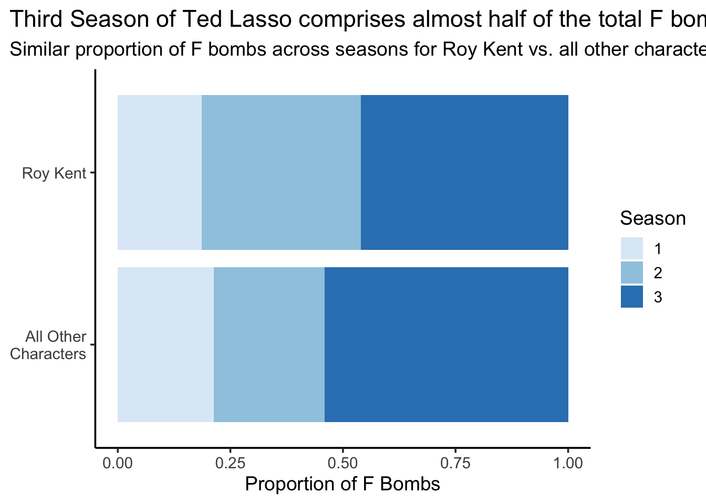
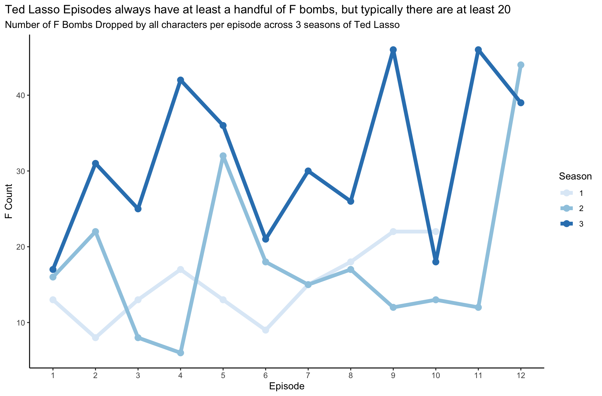

library(tidyverse)
library(tidymodels)
richmondway <- read_csv("data/richmondway.csv")COGS 137 - Midterm (Fa23)
Packages
You will need the tidyverse and tidymodels packages for this midterm. If working on datahub, these packages have been installed, but you will need to load them. You are allowed, but not required, to use additional packages.
The data
The data we’ll be using come from The Richmondway R Pacakge and have been provided by the TidyTuesday team.
The data are stored in data/richmondway.csv You’ll want to read each table in and understand what each variable represents prior to completing the exam.
Each variable and the data overall are described in detail here. You should click on that link to see what information is stored in each column in the datasets. But briefly, this dataset includes data from three seasons of the TV show Ted Lasso. Each observation is a single episode of the show. The variables, generally, relate to the number of times Roy Kent (a foul-mouthed character on the show) and the entire cast say the F-word (often referred to as dropping the “F bomb”).
Questions
Question 1 (0.5 points)
F-bomb summary:
- Calculate how many times total Roy Kent said the F-word within each season.
- Comment on in which season Roy Kent said the F-word the most overall.
richmondway |>
group_by(Season) |>
summarize(count = sum(F_count_RK))# A tibble: 3 × 2
Season count
<dbl> <dbl>
1 1 56
2 2 106
3 3 138- Season 1: 56; Season 2: 106; Season 3: 138
- Season 3
Question 2 (0.5 points)
Determine how many episodes had more F bombs by Roy Kent than every other character on the show combined (excluding Roy Kent)?
# utilizing F_perc column
richmondway |> filter(F_perc > 50)# A tibble: 9 × 16
Character Episode_order Season Episode Season_Episode F_count_RK F_count_total
<chr> <dbl> <dbl> <dbl> <chr> <dbl> <dbl>
1 Roy Kent 3 1 3 S1_e3 7 13
2 Roy Kent 9 1 9 S1_e9 14 22
3 Roy Kent 11 2 1 S2_e1 11 16
4 Roy Kent 15 2 5 S2_e5 23 32
5 Roy Kent 16 2 6 S2_e6 12 18
6 Roy Kent 22 2 12 S2_e12 23 44
7 Roy Kent 24 3 2 S3_e2 16 31
8 Roy Kent 28 3 6 S3_e6 13 21
9 Roy Kent 32 3 10 S3_e10 10 18
# ℹ 9 more variables: cum_rk_season <dbl>, cum_total_season <dbl>,
# cum_rk_overall <dbl>, cum_total_overall <dbl>, F_score <dbl>, F_perc <dbl>,
# Dating_flag <chr>, Coaching_flag <chr>, Imdb_rating <dbl># OR
# calculating diff if you didn't see/underestand F_perc column
richmondway |>
mutate(not_roy = F_count_total - F_count_RK) |>
filter(F_count_RK > not_roy)# A tibble: 9 × 17
Character Episode_order Season Episode Season_Episode F_count_RK F_count_total
<chr> <dbl> <dbl> <dbl> <chr> <dbl> <dbl>
1 Roy Kent 3 1 3 S1_e3 7 13
2 Roy Kent 9 1 9 S1_e9 14 22
3 Roy Kent 11 2 1 S2_e1 11 16
4 Roy Kent 15 2 5 S2_e5 23 32
5 Roy Kent 16 2 6 S2_e6 12 18
6 Roy Kent 22 2 12 S2_e12 23 44
7 Roy Kent 24 3 2 S3_e2 16 31
8 Roy Kent 28 3 6 S3_e6 13 21
9 Roy Kent 32 3 10 S3_e10 10 18
# ℹ 10 more variables: cum_rk_season <dbl>, cum_total_season <dbl>,
# cum_rk_overall <dbl>, cum_total_overall <dbl>, F_score <dbl>, F_perc <dbl>,
# Dating_flag <chr>, Coaching_flag <chr>, Imdb_rating <dbl>, not_roy <dbl>There were nine episodes where Roy Kent had more F bombs than all of the other characters combined.
Question 3 (1.5 points)
Generate an exploratory* visualization that displays the typical range of Roy Kent F-bombs in an episode, broken down by season and explain three things you’ve learned about the data from this plot.
*Note: exploratory here means that it does NOT have to be polished. Do NOT worry about title, axis labels, etc. We just care about understanding the data here. (If you do customize, you will NOT be penalized. It’s just not required for this question.)
ggplot(richmondway, aes(x=factor(Season), y=F_count_RK)) +
geom_boxplot()
Here we see that the median value increases from season 1 to season 3, with a typical season 1 episode having approximately 6 F bombs from Roy Kent. (However, there was an outlier episode with almost 15 in Season 1). By season 3, the median value was more than 10. The episode with the most Roy Kent F bombs was season 2, with more than 25!
Rubric:
- handles season as a factor
- correct variables
- boxplot (or other viz that displays range)
- three things observed are accurate
Question 4 (1 point)
Generate an exploratory* visualization that displays the relationship between Imdb_rating and Roy Kent F-bombs. Describe the relationship you see in this plot.
*Note: exploratory here means that it does NOT have to be polished. Do NOT worry about title, axis labels, etc. We just care about understanding the data here. (If you do customize, you will NOT be penalized. It’s just not required for this question.)
ggplot(richmondway, aes(x=Imdb_rating, y=F_count_RK)) +
geom_point()
Rubric:
- scatterplot most typical
- correct variables plotted
- interpretation correct (little to no relationship)
Question 5 (1 point)
Background: Keeley is a character on Ted Lasso who is dating Roy Kent for some but not all of the episodes.
Generate a visualization that enables you to answer the questions below: - Does the median number of Roy Kent F bombs differ when Roy is dating Keeley (vs. when he is not)? - In the episode when Roy Kent dropped the most F bombs, was Roy dating Keeley?
ggplot(richmondway, aes(x=Dating_flag, y=F_count_RK)) +
geom_boxplot() +
geom_jitter(width=0.25)
- boxplot most typical
- answers correct (fewer when dating Keeley; most when he is dating Keeley)
Question 6 (1.5 points)
What is the effect of dating Keeley on the number of Roy Kent F bombs? Generate a linear model that answers this question. Interpret the results.
linear_reg() |>
set_engine("lm") |>
fit(F_count_RK ~ factor(Dating_flag) , data = richmondway) |>
tidy()# A tibble: 2 × 5
term estimate std.error statistic p.value
<chr> <dbl> <dbl> <dbl> <dbl>
1 (Intercept) 8.84 1.31 6.74 0.000000128
2 factor(Dating_flag)Yes -0.0421 1.97 -0.0213 0.983 Rubric:
- outcome is F bombs
- dating handled as a factor
- interpretation is correct. (A typical episode when they’re not dating has 8.84 F bombs. And, on average there are slightly fewer F bombs when Keeley and Roy are dating (-0.04); however, this effect is quite small (in magnitude and significance) ). Must interpret intercept and effect/slope.
Question 7 (1.5 points)
Background: In Season 1, Roy Kent is a player. After retiring, he eventually becomes a coach. So, Roy is a coach in some but not all of the episodes.
What is the effect of whether or not Roy Kent is coaching on the number of Roy Kent F bombs? Generate a linear model that answers this question. Interpret the results. Then, comment on whether coaching or dating Keeley is a better predictor of Roy Kent F bombs and explain how you came to that conclusion.
linear_reg() |>
set_engine("lm") |>
fit(F_count_RK ~ factor(Coaching_flag) , data = richmondway) |>
tidy()# A tibble: 2 × 5
term estimate std.error statistic p.value
<chr> <dbl> <dbl> <dbl> <dbl>
1 (Intercept) 5.79 1.36 4.26 0.000167
2 factor(Coaching_flag)Yes 5.16 1.77 2.92 0.00639 Rubric:
- model correct
- interpretation is correct. (When not coaching, 5.79 F bombs; when coaching 5.16 more (on average)). Must interpret intercept and effect/slope.
- comment states that coaching is better (likely uses R^2 and/or p-value; effect size not appropriate for model comparison)
Question 8 (2.5 points)
Generate a polished visualization that allows viewers to compare proportion/percentage of F-bombs broken down by season for Roy Kent vs those by everyone other than Roy Kent. Be sure to consider effective visualization principles discussed in class in this plot.
df <- richmondway |>
mutate(`All Other Characters` = F_count_total - F_count_RK,
`Roy Kent` = F_count_RK) |>
select(Season, `Roy Kent`, `All Other Characters` ) |>
pivot_longer(cols=-Season, names_to="character")
ggplot(df, aes(x=value, y=str_wrap(character, width = 10), fill=factor(Season), group=character)) +
geom_col(position="fill") +
scale_fill_manual(values = c("1" = "#deebf7",
"2" = "#9ecae1",
"3" = "#3182bd")) +
labs(title="Third Season of Ted Lasso comprises almost half of the total F bombs",
subtitle="Similar proportion of F bombs across seasons for Roy Kent vs. all other characters",
x = "Proportion of F Bombs",
y = NULL,
fill = "Season") +
guides(color = "none") +
theme_classic(base_size = 14) +
theme(plot.title.position = "plot")
Rubric:
- determined/calculated number of not-roy
- proportions displayed
- title describes take-home
- axes labeled correctly
- good design principles (colors, labels, etc.)
Question 9 (3 points)
Recreate the plot included below using the data you’ve been working with. Once you have created the visualization, describe at least one change that you would make to improve the design of the plot.
Note: the hex values for the colors used in this plot are: “#deebf7” (lightest), “#9ecae1”, and “#3182bd” (darkest)

Code to reproduce plot:
ggplot(richmondway, aes(x=Episode, y=F_count_total, group=Season, color=as.factor(Season))) +
geom_line(linewidth=2) +
geom_point(size=3) +
scale_x_continuous(n.breaks=12) +
scale_color_manual(values = c("1" = "#deebf7",
"2" = "#9ecae1",
"3" = "#3182bd")) +
theme_classic() +
labs(title = "Ted Lasso Episodes always have at least a handful of F bombs, but typically there are at least 20",
subtitle = "Number of F Bombs Dropped by all characters per episode across 3 seasons of Ted Lasso",
y="F Count",
color="Season") +
theme(plot.title.position = "plot")Question 10 (1 point)
Describe at least 1) two things you like about how the plot in Question 9 communicates the data and 2) two things you would do differently to make this a more effective visualization for communication.
Lots of possible answers here. Most common cons: title too wordy!, line color, text size, would add grid lines, woudl visualize differently
Submit
Important
You’ll always want to knit your RMarkdown document to HTML and review that HTML document to ensure it includes all the information you want and looks as you intended, as we grade from the knit HTML.
Yay, you’re done! To finish up and submit, first knit your file to HTML. Be sure to select both your .Rmd and .html documents when choosing what to commit! Then, commit all remaining changes and push. Before you wrap up the assignment, make sure all documents are updated on your GitHub repo.